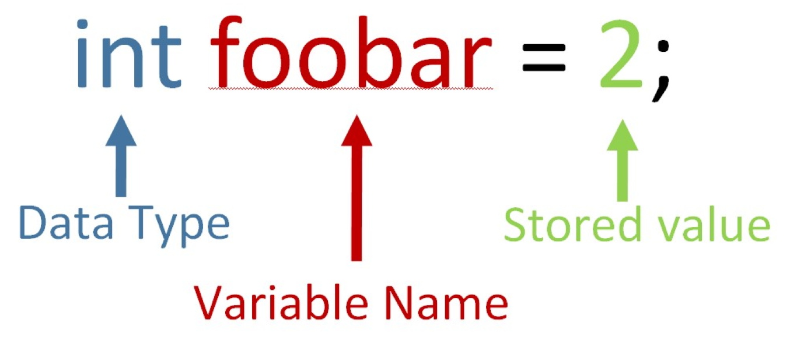

Variables and Control Structures
In this lesson, we will go into more depth on the programming side of Arduino.
Variables
A variable is a part of the code that can be used to store a value in that you want to use later, like a box. You can store pretty much anything inside of a box, and change what’s in the box at any time. Similarly, you can store all kinds of data inside of a variable like numbers, letters, and words, and these values can be changed if you tell them to.
Declaring a Variable
In order to declare (create) a variable, you use the following syntax:

Data Type
The first step is to declare what type of data you are storing, called a data type. The data type is the first part of the variable declaration (in the example above, it is type int or integer). This is where you will say whether you are storing an integer (whole number/negative number), a decimal, a character, etc. The following is a list of data types and how they are notated in the code:
int: This can store an integer (or positive/negative number) between -32,768 and 32,767.
long: This can store an integer between -2,147,483,648 and 2,147,483,647. This data type is usually used when recording time.
float: This can store a decimal number (like 2.5 or -2.5).
char: This can store an ASCII character (‘A’, ‘a’, ‘B’, etc.).
bool: This can store either true or false (1 or 0).
Variable Name
The next part of the variable declaration is to state the name of the variable, in this case “foobar”. You can name a variable whatever you want, but it is helpful to give it a name that describes what you are storing in it. For example, if you were storing the number of a pin that is connected to an LED in a variable, you might call it ledPin and declare it like this:
int ledPin = 3;
It is a good idea to create variables to store numbers that you use several times throughout your code (like pin numbers).
Stored Value
The stored value is the data that you are storing within the variable. The “=” sign is called the assignment operator. It tells the computer to assign the specified value to the variable before it. For example, in:
int ledPin = 3;
The “=” sign assigns the value of 3 to the variable ledPin and stores that value inside the variable.
Control Structures
Control structures allow the Arduino to make decisions based on given information. There are two main types of control structures: conditional and iterative. Conditional control structures tell the Arduino to do certain tasks if a condition is true. Iterative control structures tell the Arduino to repeat certain tasks over and over while a condition is true. In both cases, a condition is some true or false value. For example, the condition “AnalogRead(sensorPin) <= 500” is either true, when the sensor reads a value less than or equal to 500, or false, when the sensor reads a value greater than 500.
Conditions
The Arduino can compare values in many ways. A condition compares two values to see which value is bigger or if they are equal.
== Checks if two values are equal. Make sure to use two equals, as one equal sign gives a different command.
!= Checks if two values are not equal.
> Checks if the first value is bigger than the second.
< Checks if the first value is smaller than the second.
>= Checks if the first value is bigger or equal to the second.
<= Checks if the first value is smaller or equal to the second.
If Statements
if(condition) {
//Perform the code within the brackets if condition is true
}
For example, if you a fan to turn on when the temperature is over 75 degrees, you might write something like this:
if(Temperature > 75) {
Fan.set(HIGH);
}
else {
Fan.set(OFF);
}
else statements
Else statements usually come after if statements and are a way of saying “otherwise”. In Arduino programming, it looks like this:
if(condition) {
//Perform this code if condition is true
else {
//Otherwise, perform this code (condition is false)
}
Example:
if(Temperature > 75) {
Fan.set(HIGH);
else {
Fan.set(OFF);
}
while Loops
A while loop is the way to code iterative control structures in. It will look like this:
while(condition){
//Repeat this code while the condition is true
//(until condition becomes false)
}
For example, if you wanted to turn on the fan while a button is pressed, you can write:
while(digitalRead(buttonPin) == HIGH){
Fan.set(HIGH);
}
Fan.set(OFF);
}
CHALLENGE: Write a code that will blink an led 5 times then stop.
Hint: You will need to use a variable to do this (Make sure the variable is above void setup or else it might not behave the way you want it to).
Advanced Control Structures
else if
You can use an else if statement after an if statement in the following way:
if(condition 1){
//Perform if condition 1 is true
}
else if(condition 2){
//Perform if condition 1 is false AND condition 2 is true
}
You can use any number of else if statements paired with an if statement. Here is an example:
if(Temperature > 85){
//arduino first checks if the temperature is higher than 85
Fan.set(HIGH); //if it is, then it skips the rest of this
}
else if(Temperature > 80){
//if it's not higher than 85, then it checks if its higher than 80
Fan.set(MEDIUM);
}
else if(Temperature > 75){
//same idea as above
Fan.set(LOW);
}
else {
//If none of the ifs are true, then we turn the fan off.
Fan.set(OFF);
}
Break Command
The break command tells the computer to exit whichever loop it is currently inside. For example, if the Arduino was reading code from a while loop and came across a break statement, it would stop reading the code and start reading the code after the loop. A break command looks like this:
break;
Example:
while(Temperature>75){
Fan.write(HIGH);
if (digitalRead(OffButton)==HIGH){
break;
}
}
for loops
For loops is an easy way to perform a code a certain number of times. Within the loop, you declare a variable (it’s common to use i) and add to it until you reach a certain point. A typical for loop is structured like this:
for(int i = 0; i < numOfTimes; i++){
//Perform the code numOfTimes times
}
The “int i = 0;” part declares a variable i and sets it equal. The “i < numOfTimes” part is a condition telling the Arduino to perform the code while the variable i is less than the number that you specify. The “i++” part tells the Arduino to add one to the variable i every time the code within the brackets runs through.
Here is an example of turning a servo motor to 5 degrees:
for(int i = 0; i < 5; i++){
myServo.write(90);
delay(100);
myServo.write(0); //Servo rotates back and forth 5 times
}
CHALLENGE: Try to blink an LED 5 times again, this time using a for loop instead of a while loop. This time, put the code in void setup instead of void loop so that it only runs one time.